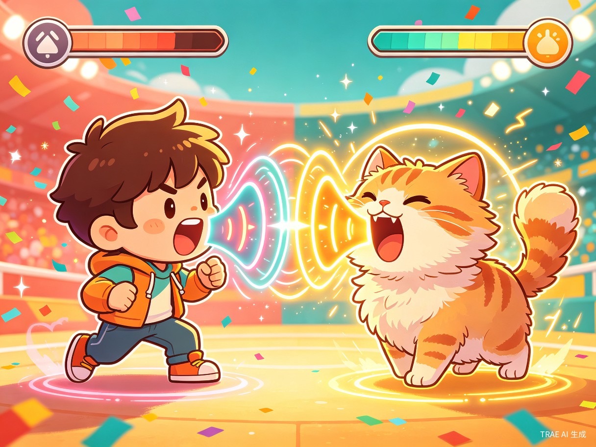
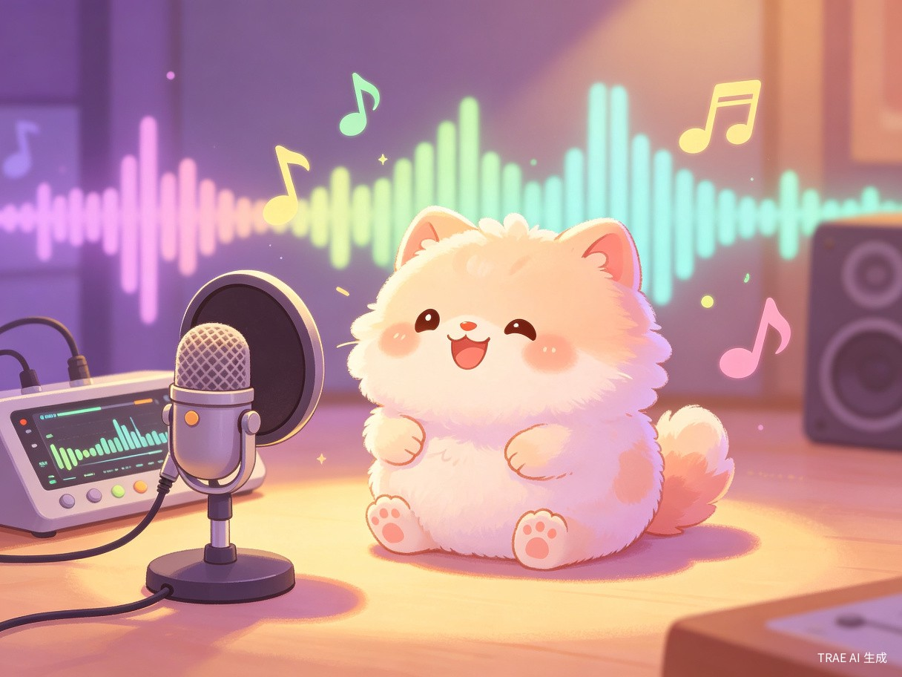
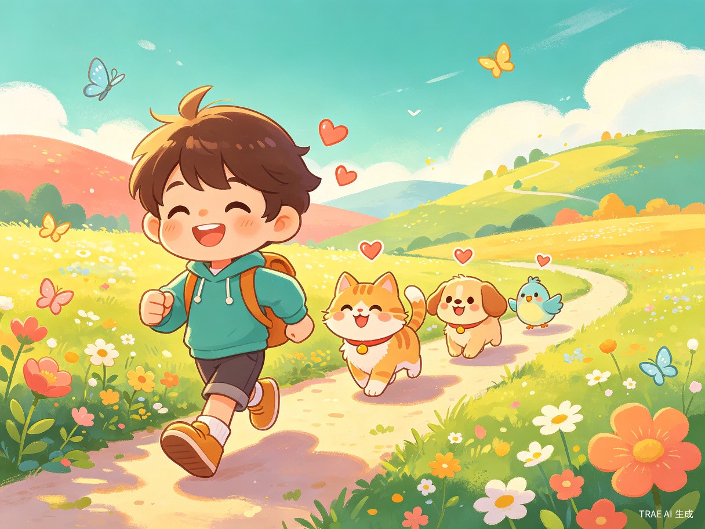

创意名称 + 创意介绍
想解决什么问题
当前放置类游戏普遍缺乏真实互动感和社交趣味性。玩家与虚拟宠物之间的互动仅限于点击、喂食等简单操作，无法建立真正的情感连接。同时，市面上的宠物游戏玩法同质化严重，缺少将"声音"作为核心玩法的创新产品。
为什么会想到做这个
灵感来源于日常生活中宠物叫声带来的治愈感，以及街机格斗游戏中的热血对抗体验。我们思考：如果宠物能记录真实叫声，而玩家需要模仿这些叫声来"征服"宠物，会是一种怎样的体验？这种将声音识别与放置玩法结合的创意，既有趣又新颖，能够带来全新的游戏乐趣。
大概是什么产品
一款移动端挂机放置宠物游戏 App，融合开放地图探索、宠物录音互动、声音格斗对战三大核心玩法，支持 iOS 与 Android 双平台。
核心亮点：玩家录下宠物的真实叫声，在对战中模仿叫声 —— 声音越大、越相似，招式越强力，攻击力越高！
核心玩法展示
开放地图探索
自由移动的开放世界地图，玩家角色可在草地、森林、城镇等场景中自由探索，发现并放置各种可爱宠物。
宠物录音系统
每只宠物都可以录制真实叫声！玩家靠近宠物时，宠物会发出录制的叫声，营造真实的陪伴感。
声音格斗对战
类似街霸格斗的对战模式！玩家模仿宠物叫声，声音越大招式越强，用"吼叫"击败宠物来收服它。
宠物跟随收集
战胜宠物后，它就会跟在你身后！收集越多宠物，队伍越庞大，地图上回头一看超有成就感。
游戏画面概念



玩法流程
探索地图，发现宠物
玩家在开放地图中自由移动，发现散落在各处的可爱宠物。宠物会在地图上自主移动，充满生命力。
靠近宠物，触发叫声
当玩家角色靠近宠物时，宠物会发出预先录制的叫声。不同宠物有不同叫声，增加探索的惊喜感。
选择对战，进入格斗
玩家可以选择与宠物进入"吵架对战"状态。进入类似街霸格斗游戏的横版对战界面，紧张刺激。
模仿叫声，释放招式
玩家需要发出与宠物叫声相似的声音。系统通过音量与相似度判定 —— 声音越大，招式越强力，攻击力越高！
战胜宠物，收入队伍
赢得对战后，宠物会被收服，乖乖跟在玩家角色身后。宠物之间相遇也会互相发出叫声，增添趣味。
目标用户及痛点
面向哪些用户
本产品面向18-35岁的年轻用户群体，包括：
- 宠物爱好者 —— 喜欢猫咪、狗狗等萌宠，渴望在虚拟世界中体验养宠乐趣
- 放置类游戏玩家 —— 喜欢挂机养成、轻松休闲的游戏体验
- 社交娱乐用户 —— 享受有趣、可分享的游戏内容，喜欢录制搞笑视频
- 解压需求人群 —— 通过"大喊大叫"释放压力，获得情绪宣泄的出口
在什么场景下使用
玩家可以在碎片时间（通勤、午休、睡前）打开游戏，查看宠物在开放地图上的状态；也可以在聚会社交场景中，与朋友一起进行声音对战，比拼谁的叫声更响亮、更相似，充满欢乐与笑点。
当前痛点
- 现有宠物游戏互动方式单一，缺乏真实感和沉浸感
- 放置类游戏长期留存率低，缺少社交传播话题
- 解压类游戏玩法单调，无法兼顾趣味性与情绪释放
- 声音互动类应用仅限于工具属性，缺少游戏化包装
价值与意义
商业价值
声音格斗对战具备极强的社交传播性。玩家录制的搞笑叫声对战视频，天然适合短视频平台传播，有望形成病毒式裂变增长，降低获客成本。
情绪价值
通过"大喊大叫"的格斗方式，为用户提供健康有趣的情绪宣泄出口。在快节奏生活中，这种轻松解压的互动方式具有广泛的社会需求。
技术创新
将声音识别技术与放置游戏深度融合，开创"声音驱动游戏"新品类。音量检测 + 声纹匹配的双重判定机制，兼顾趣味性与技术深度。
技术可行性
| 技术模块 | 技术方案 | 成熟度 |
|---|---|---|
| 开放地图 | Unity 2D/3D 引擎，Tilemap 瓦片地图系统 | 成熟 |
| 宠物 AI 移动 | 状态机 + 导航网格（NavMesh）寻路 | 成熟 |
| 录音与叫声回放 | Web Audio API / Unity AudioSource 录音回放 | 成熟 |
| 音量检测 | 实时音频分贝（dB）计算 | 成熟 |
| 声音相似度匹配 | MFCC 特征提取 + DTW 动态时间规整算法 | 可用 |
| 格斗对战系统 | 帧动画状态机 + 碰撞检测 + 伤害计算 | 成熟 |
| 挂机放置系统 | 离线收益计算 + 时间戳同步 | 成熟 |
开发周期预估：核心玩法 MVP 版本约 2-3 个月可完成，完整版（含社交系统、多种宠物、地图扩展）约 6 个月。
差异化优势
| 对比维度 | 传统放置宠物游戏 | 叫声大作战 |
|---|---|---|
| 互动方式 | 点击、喂食、升级 | 声音互动 + 格斗对战 |
| 宠物个性化 | 预设外观与属性 | 真实录音叫声，每只都独一无二 |
| 对战机制 | 数值自动战斗 | 声音驱动格斗，玩家主动参与 |
| 社交传播性 | 较弱 | 极强 —— 搞笑叫声对战天然适合短视频传播 |
| 情绪价值 | 养成满足感 | 养成 + 解压 + 社交欢乐 |
总结
叫声大作战是一款将录音互动、声音格斗与挂机放置三大玩法深度融合的创新宠物游戏。它不仅解决了传统放置游戏互动感不足的痛点，更通过"用声音征服宠物"的独特机制，创造了极强的社交传播势能与情绪价值。无论是独自解压还是与朋友同乐，这款游戏都能带来独一无二的欢乐体验。